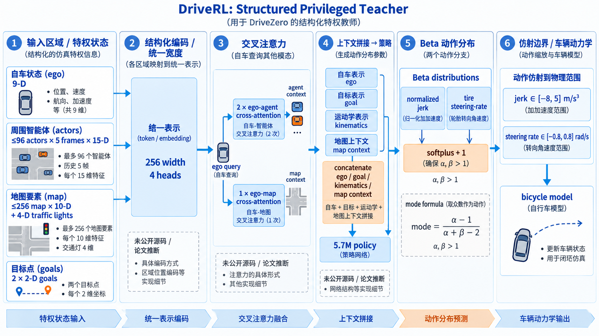
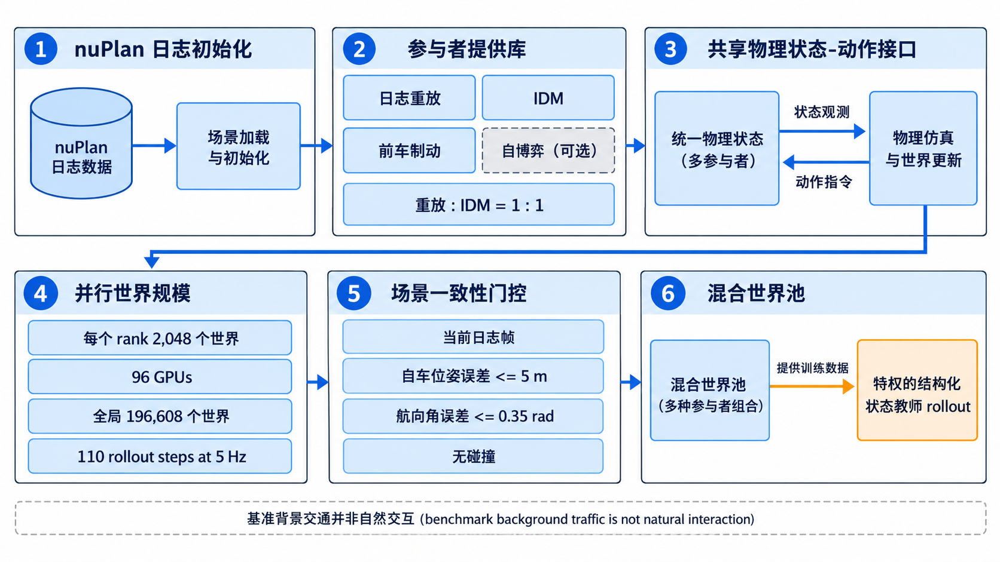
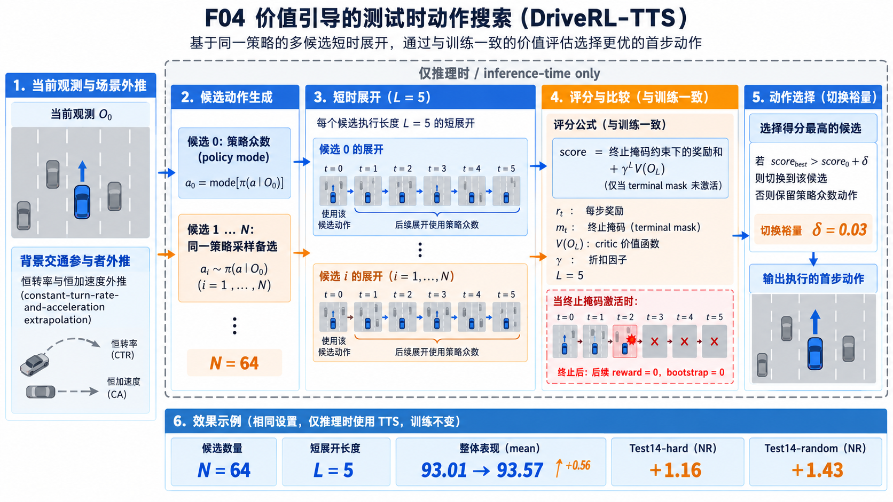
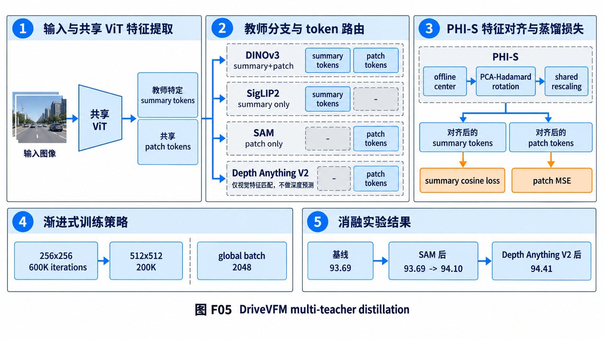
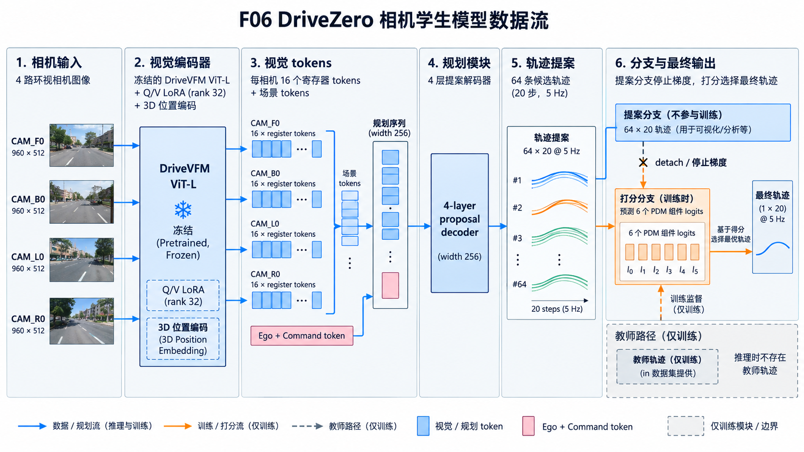
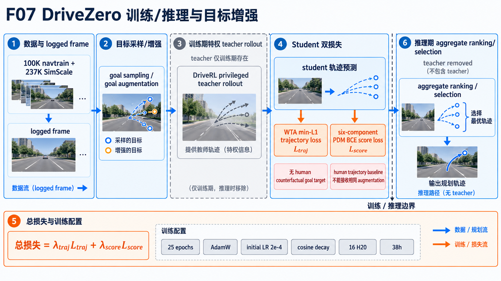

1. 先把问题钉牢：超越示范到底是什么意思
传统端到端驾驶通常把当前图像、车辆状态和导航命令映射到一条人类未来轨迹。这个设定稳定，却把“人当时选择的那条路”误当成“唯一正确的路”。一个路口可能同时允许等待、缓慢通过或换道；日志只留下其中一种。更麻烦的是，策略一旦偏离日志，随后的状态在训练集里没有对应标签，误差会沿时间累积。
DriveZero 的核心判断是：感知与动作的学习条件并不相同。视觉表征需要海量、跨域、能提供密集语义和空间线索的图片；驾驶动作需要让车辆真的前进、犯错、收到延迟回报。直接在像素环境做 RL 同时承担渲染成本和探索成本，既慢又难稳定。因此论文先训练“特权动作教师” DriveRL，再训练“相机表征教师” DriveVFM，最后把特权教师产生的行为迁移给视觉学生。
这不是把人类数据丢掉：nuPlan 日志仍然用来初始化场景、提供地图和目标候选；改变的是日志不再充当动作标签。DriveRL 从随机初始化开始，PPO 通过闭环后果优化 jerk 与转向角速度。学生接收同一帧的相机和状态配对，但目标来自教师 rollout，而不是人类驾驶员的未来序列。
全部细节
左侧是输入证据：nuPlan 场景、相机/车辆状态和历史轨迹；中部上方把混合智能体世界、闭环仿真和 PPO 教师连成训练链，明确 196,608 worlds/96 GPUs、5.7M teacher、Beta jerk+steering-rate 三个论文事实；中部下方把 DINOv3、SigLIP2、SAM、Depth Anything V2 汇合到 DriveVFM，并把未公开的蒸馏实现用灰色虚线隔离；右侧学生生成 64 条、每条 20 steps 的候选，用 WTA 与 goal augmentation 训练，再在部署阶段只保留最高分轨迹。橙色箭头只表示训练期监督，灰色虚线表示教师仅在训练期存在，蓝色主箭头表示数据/信息流，避免把教师误画成推理时模块。
读者需要先记住的四个边界
| 对象 | 论文事实 | 容易误读的地方 |
|---|---|---|
| DriveRL | 结构化特权状态输入；闭环 PPO；5.7M 参数；部署时可做 value-guided TTS。 | 不是相机策略，也不是人类轨迹模仿器。 |
| DriveVFM | 冻结的 DINOv3、SigLIP2、SAM、Depth Anything V2 作为特征教师；无任务标注。 | Depth Anything 蒸馏的是视觉特征，不是深度预测图。 |
| DriveZero | 四相机、ViT-L、rank-32 Q/V LoRA、64×20 轨迹候选；开放环学生训练。 | 训练时不进入渲染器，推理时不带 DriveRL 教师。 |
| 源码 | 官方仓库只有 README、PDF 和项目资产。 | 报告中的伪代码是可验证契约，不是官方实现文件。 |
2. DriveRL 的输入与网络：让特权状态成为可学习的查询
DriveRL 在每个 5 Hz 时刻接收结构化观测 O_t。自车状态是 9 维运动学量；每个交通参与者保留当前帧加四个历史帧，最多 96 个 actor、每帧 15 维；局部矢量地图最多 256 个 token、每个 10 维，并附带交通灯的 4 维 unknown/red/yellow/green 状态；导航由 ego 坐标系里的两个 2-D goal 点表达。这样做的关键不是“把所有东西塞进 Transformer”，而是把不同实体的容量和历史长度固定下来，使 GPU 批处理可以预分配。
三个专用编码器把 actor、ego-kinematics 和 map 映射到 256 维 token。两个 goal 点先经过正弦位置编码和共享 MLP，再做均值池化。均值池化带来一个很实用的契约：交换近目标和远目标的槽位不会改变表示，所以目标是无序空间集合；训练时可以复制单目标，部署时可以用速度相关的 near/far route anchor，而不需要改网络结构。
注意力不是对称的全局 self-attention。ego token 是唯一 query，先做两层 ego-to-agent cross-attention，再做一层 ego-to-map cross-attention，最后把 ego、goal、kinematics 和 map context 拼接，经共享 MLP 进入策略头。这个结构把“我现在应该关注哪些周围实体”和“道路几何怎样约束我”分成两个有顺序的汇聚阶段，计算量也只随被查询上下文线性增加。

全部细节
输入区明确 9-D ego、96×5×15-D actors、256×10-D map+4-D traffic lights、2×2-D goals；编码区注明统一 256 width/4 heads；注意力区注明 2 次 ego-agent 和 1 次 ego-map；上下文区把 ego/goal/kinematics/map context 拼接成 5.7M policy。动作区同时画 normalized jerk 与 tire steering-rate 两个独立 Beta 分支，softplus+1 保证 α、β>1，虚线框给出 mode 公式；最右端把归一化动作经 affine bounds 送入 bicycle model，列出 jerk [-8,5] m/s³、steering-rate [-0.8,0.8] rad/s、加速度 cap 4.0 m/s² 和 steering-angle cap π/3。灰色说明框标出具体编码、网络结构等在仓库未公开。
Beta 动作分布不是装饰：它把“探索”与“部署动作”分开
策略头为归一化 jerk 和轮胎转向角速度分别预测 Beta 分布形状参数。论文把原始 logits 变成 softplus(z)+1，因此 α,β>1，分布是单峰的，减少把概率质量压到 0 或 1 的极端控制。训练阶段从 Beta 采样，保留连续探索；正式评估使用解析 mode，避免随机性污染 benchmark。
这个公式的直觉是：当 α=β=2 时，mode 在 0.5；如果 α 增大、β 固定，mode 向 1 移动。得到的归一化动作再仿射映射到物理范围，随后由运动学自行车模型积分速度、航向和位置。论文给出轮距 3.09 m、后轴到中心 1.46 m、加速度时间常数 0.20 s、转向时间常数 0.05 s；这些常数决定同一个 jerk/steering-rate 在仿真里究竟变成多快的纵向和横向变化。
解释性伪代码如下，变量名只复现论文接口，不暗示仓库中存在同名函数：
def teacher_step(structured_obs, goals, sample):
ego = encode_ego(structured_obs.ego) # [1, 256]
actors = encode_actors(structured_obs.actors) # [<=96*5, 256]
maps = encode_map(structured_obs.map_tokens) # [<=256, 256]
goal = mean(goal_mlp(sinusoidal(goals)), dim=0) # permutation invariant
ego = cross_attention(ego, actors, layers=2)
map_ctx = cross_attention(ego, maps, layers=1)
h = fuse(ego, goal, structured_obs.kinematics, map_ctx)
alpha, beta = softplus(policy_head(h)) + 1
u = beta_sample(alpha, beta) if sample else beta_mode(alpha, beta)
return bicycle_step(affine_bounds(u))源码证据边界：上述块是“接口级复现蓝图”。论文没有说明每个 encoder 的层数、激活、归一化、参数命名或 batch 组织，不能把这些未知细节写成已实现事实。
3. 混合智能体闭环世界：日志只负责搭台，行为由交互产生
闭环 RL 的难点是背景交通不能全部静止，也不能简单把日志轨迹硬贴到已经偏离的自车上。DriveRL 为每个背景 actor 提供统一的“物理状态—动作”接口，运行时可以混用三类 provider：log replay、规则模型（IDM、前车制动）和 learned policy（Self-Play）。报告的主设置是 1:1 replay/IDM，行人等非车辆仍回放；Self-Play 作为额外配置用于部署准备。
训练每个 rank 运行 2,048 个世界，12 nodes/96 GPUs 共 196,608 worlds；每个世界 110 steps、5 Hz，即 22 秒的 rollout。每次更新产生 225,280 transitions/rank，拆成 11 个 20,480 的 minibatch，做四个 PPO epoch。这样的规模把每一步背景行为、动力学、奖励和场景编辑都变成 GPU batch 运算，吞吐足以让随机初始化的策略看到大量失败与恢复状态。
场景一致性插入是一个小但关键的工程机制：晚进入日志的 actor 只有在当前日志帧确实存在、自车与日志位姿距离不超过 5 m、航向差不超过 0.35 rad、且不会与可见 actor 碰撞时才释放；释放后跟随其日志轨迹。否则它会突然出现在偏离后的自车旁边，制造不属于真实场景的碰撞标签。

全部细节
原图中的“2,048 worlds per GPU”对应附录 A1 的单 rank 配置，“196,608 worlds / 96 GPUs”对应全局并行规模；replay、IDM、Self-Play 是背景 provider，而不是三个并列感知模型。图中“value-guided inference-time only”表示 TTS 只改推理时动作选择，不重新训练 checkpoint。图示把 DriveVFM 的通用图片、驾驶数据和四个基础模型汇合到特征蒸馏，最终由 DriveZero 将结构化教师轨迹搬到相机学生。图里较小的数值是论文主表结果，不应被理解成单次场景成功率。阅读这张图时应按“日志初始化→provider 推进→ego 动作回写→下一帧状态”的时间顺序追踪，而不是把日志回放误当成策略输出：replay 负责固定背景，IDM 负责可行车辆响应，Self-Play 才允许其他智能体由策略产生动作。每个 world 在 5 Hz 运行 110 步，终止前先检查当前帧是否仍与日志对齐、ego 位姿误差是否不超过 5 m/0.35 rad 以及是否发生碰撞；任一条件失败都会切断该 rollout。因而“混合世界”提供的是受控的交互分布，不能直接声称等价于真实道路中的自然交通博弈。
奖励与八通道 critic：乘法软指标为什么比相加更苛刻
DriveRL 的即时奖励包含 hard event、一次性 goal bonus 和六个 [0,1] 的 soft quality。六个 soft 项是 cross-lane、centerline、curb、comfort、TTC、overspeed。hard 事件终止 rollout，goal arrival 不终止。软项使用乘法，意味着某一项接近 0 会压低整个 joint quality，安全严重下降不能被进度高分完全补偿。
式中 d_t 是 hard termination mask，H=110 把每一步的 soft product 归一化到整个 rollout。附录进一步把 critic 拆成 hard、goal 和六个 soft channel，共八路；六个 soft channel 不是六个独立奖励，而是用 deficit-based 权重把同一个乘法奖励分配给诊断通道。因为各通道奖励严格守恒，求和后的 GAE 与标量 GAE 在浮点误差范围内等价。
八路 critic 的价值在于“知道错在哪里”：碰撞、未到达目标和 comfort/TTC 缺陷各有一个价值读数，训练仍只优化总 advantage。论文用 γ=0.99、GAE λ=0.95、policy/value clip 0.2、entropy coefficient 0.01；Muon 优化器初始学习率 3×10⁻⁴，2,400 updates 约 21 小时。
4. Value-guided test-time search：把策略的多样性和 critic 的远期判断用起来
直接执行 Beta mode 很稳，却丢掉分布尾部的可行动作，也没有利用 critic 对延迟回报的估计。DriveRL-TTS 保留 mode 作为 candidate 0，再从同一 Beta policy 采样 N 个候选首动作。每个候选只滚动 L 步：第一步用候选动作，后续步骤回到该候选状态后继续使用 policy mode；背景 actor 用 bounded constant-turn-rate-and-acceleration 外推。
候选分数与训练奖励完全同构：在线累积每一步 reward，遇到 terminal 后屏蔽后续 reward 和 bootstrap，最后用教师 critic 估计剩余回报。这样 TTS 不是另训一个 planner，而是对 PPO 学到的局部策略做小范围 policy improvement。
在论文的设置 L=5, γ=0.99, δ=0.03 下，只有最高分候选比 mode 高出 margin 才切换，否则继续执行 mode。N 从 8 增到 64 时，六个 nuPlan 设置均值从 DriveRL 的 93.01 提升到 93.57；Test14-hard NR 提升 1.16，Test14-random NR 提升 1.43。这个结果说明额外计算主要帮模型避开短期不利后果，而不是改变长期策略。

全部细节
图中 BEV/相机的对应关系说明：TTS 的每个候选不是只在平面上画一条曲线，而是先把首动作送进车辆动力学，再从候选状态重新计算 policy mode；因此候选差异会传递到后续状态。实线/彩色轨迹表示候选或模型输出，背景车辆是独立 provider。论文没有公开 TTS 的碰撞检测代码、常转率外推的离散公式或并行 kernel，正文只依据“5-step rollout + critic bootstrap + terminal mask”解释其行为。具体执行可以拆成三层：candidate 0 是 Beta 分布的 mode，其他候选只替换第一步动作；随后每条轨迹都用自己的 ego 状态继续 4 步，背景车辆用有界的常转率/常加速度外推。对第 ℓ 步，若 terminal mask 为 1，则后续即时奖励和 bootstrap 都被屏蔽，分数退化为已完成部分的回报；否则才保留 γ^L V(O_L)。最终 margin δ=0.03 还会抑制“几乎同分”的频繁切换。N=64、L=5 意味着每次决策最多评估 320 个短步，收益来自远期 critic 预估，代价是推理延迟线性增加；这也是它应标成 inference-only 的原因。
5. DriveVFM：四种互补视觉能力如何进入一个 ViT
DriveVFM 解决的是另一个错配：DriveRL 看得到 actor、地图和交通灯，但部署学生只有像素。与其为检测、车道、分割、深度分别制作大量人工标签，论文冻结四个视觉基础模型，把它们当作不同感知任务的代理监督。DINOv3 提供空间结构与对应关系，SigLIP2 提供图像级语义，SAM 提供边界敏感特征，Depth Anything V2 提供几何线索。
共享 ViT 对一张图片输出“每个基础模型一个 summary token + 一组共享 patch tokens”。DINOv3 同时监督 summary 和 patch；SigLIP2 只监督 summary；SAM 只监督 patch；Depth Anything V2 选择视觉 feature matching，而不是深度 prediction。summary 用 cosine distance，patch 用 MSE。模型专属 adaptor 只做投影，不把四套 backbone 留到下游。
PHI-S 是这套多教师机制的稳定器。不同教师 feature 的均值、协方差和各向异性差别很大，单纯调 λ_k 只能解决模型之间的总量不平衡，解决不了一个模型内部维度的方差集中。PHI-S 离线估计统计量，先中心化，再做 PCA-Hadamard 旋转把方差铺到各维，最后乘共享尺度。于是四个教师的 patch target 具有相近的条件数，联合回归的梯度不会被“大激活模型”垄断。
训练采用渐进分辨率：256²、600K iterations、global batch 2,048；随后 512²、200K iterations、同 batch。数据混合 LAION-2B、ImageNet-21K、SA-1B 以及 OpenDV、nuPlan、Waymo 驾驶图像。下游只保留 DriveVFM backbone，教师模型和 adaptor 丢弃。

全部细节
论文的完整 Figure 3 从输入图、两种 PCA 表征到 ground-prototype cosine heatmap 依次排列。作者先用 Mask2Former 找 ground patch，平均得到 ground prototype，再计算每个 patch 与 prototype 的 cosine；蓝色表示更像地面，红色表示差异更大。DriveVFM 的价值不是“颜色更好看”，而是道路区域响应更连续，同时把不常见的小物体、路边障碍物从 ground 中分离出来。这里的可视化是特征诊断，不是训练标签，也不代表部署时运行 Mask2Former。对应到训练数据流，DINOv3 的 summary 与 patch 两路都会产生损失，SigLIP2 只约束全图 summary，SAM 只约束边界敏感的 patch，Depth Anything V2 只提供 feature matching；四个教师并不共享同一个标签空间。PHI-S 的顺序也不能颠倒：先用离线统计量中心化，再用 PCA-Hadamard 旋转打散主方向，最后乘共享尺度，否则一个高方差教师仍会在 MSE 中占据主要梯度。分辨率从 256² 到 512² 的两阶段训练保持 global batch=2,048，保证模型先学稳定的全局布局再补充细粒度边界；消融 93.69→94.10→94.41 说明增益来自互补教师的叠加，而不是某一张 heatmap 的视觉效果。
QK-Clip：稳定性同时影响训练和 FP16 部署
报告发现某些 attention head 的 QK dot product 会逐步变大，导致 pre-softmax logits 爆炸、loss spike 和精度转换误差。DriveVFM 不改变 forward attention，而是在 optimizer update 后监测每个 head 的最大 logit；若超过 1,000，就给 query/key projection 同时乘相同的平方根缩放因子。值投影保持不变，所以它是对 QK scale 的直接上界。
附录 A14 的证据很具体：baseline 最大 QK logit 308,320，FP32→FP16 mean abs 0.109、cosine 0.893；QK-Norm 将最大值降到 5,125，但 mean abs 仍 0.032、cosine 0.981；QK-Clip 把最大值压到 995，mean abs 0.004、cosine 0.999。也就是说，QK-Clip 不只是让训练曲线更平滑，它让 FP16 推理几乎复现 FP32 feature。
6. DriveZero 学生：从四路相机到 64 条可评分轨迹
学生输入 CAM_F0、CAM_B0、CAM_L0、CAM_R0 四路 960×512 图像，加 ego kinematics 和 navigation command。每路图像由冻结的 DriveVFM ViT-L 编码，rank-32 Q/V LoRA 是唯一视觉 backbone 的可训练适配器。视觉 token 加 3D position embedding 后，每路用 16 个 learnable register 压缩，再形成 scene tokens；这一步把四个视角的高密度 patch 变成规划 decoder 能承受的长度。
ego 状态和 command 嵌入成一个 ego token，加到 64 个 learnable trajectory queries 上。四层 trajectory decoder 让每个 query cross-attend scene tokens，输出 20 steps、每步 ego-relative (x,y,yaw) 的候选轨迹。随后把候选轨迹 detach，编码为 score query，送入独立 scoring decoder 再 attend visual tokens，预测六个 PDM 分量：collision、drivable-area、progress、TTC、comfort、driving-direction compliance。detach 的意义是把“产生多样候选”和“学习怎样排序”分开，避免 scoring loss 把所有 query 拉成一条轨迹。

全部细节
左侧 BEV 与右侧 front camera 是同一场景的两种投影；彩色点按秒排列，展示轨迹长度、曲率和与周围车辆的间距。论文强调的不是“模型总会更快”，而是当道路前方清晰、人类轨迹选择停留时，RL 教师产生的目标允许学生学习更平滑的前进动作，同时保持碰撞和道路边界约束。图中 human/model 的对照属于 NAVSIM navtest 可视化，不能外推成真实道路统计。逐点对照时，先确认两种投影的时间戳一致，再看轨迹是否在同一 drivable area 内，最后才比较前进距离；否则相机视角变化会把横向位移误读成速度差。这个案例体现的是监督来源的变化：学生并没有直接复制人类的停留动作，而是从同一初始场景得到 DriveRL teacher rollout，再通过 WTA 只让最接近的 query 接收轨迹梯度。安全约束仍由 collision、drivable-area、TTC 与 comfort 等 PDM 分量评估，因此“继续前进”必须同时满足可行性和进度。由于图只来自 NAVSIM navtest 的可视化样例，它能说明目标轨迹为何不同，不能证明模型在真实道路上普遍比人类更激进或更安全。
7. 训练目标与 goal augmentation：同一个目标必须贯穿三条链
对于每个日志帧，冻结 DriveRL 接收结构化状态和一个 goal，在所有背景 actor 跟随日志的条件下 rollout，得到教师轨迹 τ^T。学生的 M 条候选只取与教师最近的一条承担轨迹损失，这就是 winner-takes-all（WTA）。它允许不同 query 学习不同驾驶模式：例如同一路口可以有等待、直行、轻微绕行，而不会要求每条 query 同时平均这些模式。
距离是对 20 个点的 ego-relative (x,y,yaw) 做平均 L1。若第 7 条候选最接近教师，只有第 7 条的 trajectory loss 产生梯度，其他候选仍可通过 score branch 学会“在什么场景下应该被选中”。
每条候选还要预测六个 PDM 组件，目标由对应的 PDM evaluator 计算。score branch 使用逐候选、逐组件 BCE：
推理时先把六项按 benchmark 规则聚合，选 aggregate score 最高的轨迹。完整目标为：
goal augmentation 是论文最容易被低估的环节。人类日志只有一个 route intent，换目标就没有“反事实的人类未来”。DriveRL 是 goal-conditioned 的，所以可以在相同初始场景采样另一个未来位置或车道投影目标，再同时改变三件事：教师 command、teacher rollout、PDM score target。这样一个场景生成多个目标一致的监督样本，学生看到的是行为分布而不是单一答案。

全部细节
图中 BEV 的道路边界、车辆框和轨迹点共同验证三个 PDM 关心的因素：是否撞车、是否离开 drivable area、是否保持合理进度。论文描述的典型失败是 DrivoR-Scale 撞到周围车辆或越出可行驶区域，而 DriveZero-Scale 在相同场景内保持无碰撞并留在道路边界。这里的“Scale”只代表加入 237K SimScale 场景的数据扩展，不意味着更大模型或在线强化学习。轨迹比较应把道路边界当作硬约束、把进度当作软目标：一条更短但越界的曲线不会因为终点更近而获得完整分数，一条绕行曲线也要接受 progress 惩罚。DriveZero 的 score branch 先对每条候选分别预测六个 PDM 分量，再按 benchmark 规则聚合，因而图中的最终选择不是简单按终点距离排序。DrivoR-Scale 的碰撞/越界案例说明视觉端生成的单条回归轨迹可能在局部几何上合理，却没有被独立评分头筛掉；DriveZero-Scale 的优势来自“多候选+可解释评分”的组合。需要特别区分数据规模与参数规模：Scale 指额外的 SimScale 场景覆盖，不表示更换 backbone、增加在线 RL 或使用人工反事实标签。
论文披露的实现契约与不可见部分
# 解释性伪代码：论文公开了数据关系，但没有公开源码
for frame in navtrain:
goal = sample_goal(frame, log_or_lane_projection=True)
teacher_traj = DriveRL.rollout(frame.structured_state, goal,
background="log_replay")
proposals = DriveZero(frame.images, frame.ego, command(goal))
winner = argmin(L1(proposals.trajectory, teacher_traj))
pdm_targets = evaluate_pdm(proposals, goal)
loss = lambda_traj * L1(proposals[winner], teacher_traj)
loss += lambda_score * BCE(proposals.scores, pdm_targets)
update(student_parameters_with_LoRA=True)未公开项包括：DriveZero decoder 的具体 attention block、LoRA 注入层清单、register 的维度、PDM evaluator 的实现、λ 权重和数据增强代码。报告只给出输入/输出形状、训练顺序和可验证行为，不虚构类名、路径或超参。
8. 实验：数字背后究竟证明了哪一层
DriveRL 在 nuPlan 的 Val14、Test14-hard、Test14-random 各做 NR 与 R 两种闭环评估。NR 背景按日志回放，R 中 eligible vehicles 用 IDM。DriveZero 在 NAVSIMv1 navtest、NAVSIMv2 navhard 做 pseudo closed-loop，在 HUGSIM 做真正闭环零样本迁移。三套评测测的是不同风险：navtest 看 PDM 六项，navhard 的第二阶段加入 Gaussian-Splatting ego-state 扰动，HUGSIM 则看跨数据集的路线完成度与 HD-Score。
| 实验块 | 关键数字 | 如何解读 |
|---|---|---|
| DriveRL 主结果 | 93.01 → 93.57（TTS）；六个设置均超过 Log-Replay 对应 NR/R 基线 | 闭环 RL 学到的行为不被日志示范上限锁死；TTS 只靠推理计算增益。 |
| TTS scaling | N=64；Test14-hard NR +1.16，Test14-random NR +1.43 | 候选数增加提升局部动作搜索命中率，L 增加则会增加串行延迟。 |
| NAVSIMv1 | DriveZero 94.8 PDMS；DriveZero-Scale 95.3；Human Driver 94.8 | 没有人类轨迹监督也能达到/超过人类参考；模拟数据扩展继续提高进度与安全组合。 |
| NAVSIMv2 navhard | DriveZero-Scale 57.1 EPDMS；DrivoR-Scale 54.6 | 在扰动第二阶段仍有优势，说明评分分支不只是拟合干净的开放环轨迹。 |
| HUGSIM zero-shot | HD-Score 46.6；前一 SOTA 38.5 | 没有 HUGSIM 微调仍可跨 KITTI-360、nuScenes、PandaSet、Waymo 重建场景迁移。 |
消融结果把贡献拆得更清楚。DriveVFM 的 DINOv3+SigLIP2 为 93.69，加 SAM 到 94.10，再加 Depth Anything V2 到 94.41；增益是累积的，而不是某个单一教师独占。监督方式方面，人类轨迹 93.92，DriveRL 轨迹 93.61，加 goal augmentation 后 94.41；因此真正让教师超过人类基线的，是“可查询反事实目标”而非简单替换标签。
视觉 backbone scaling 也有单调趋势：DriveVFM ViT-S 94.41、ViT-B 94.54、ViT-L 94.83；相同数据比 DINOv3 ViT-L 94.55 略高。Self-Play 在 nuPlan 上的最好均值 93.11，与单 ego 93.01 接近，论文明确说它带来可行性而非稳定优势，因为 benchmark 本身的背景交通仍是 IDM，不奖励更自然的交互。
全部细节
第一类场景检验纵向反应：前车突然制动时，DrivoR-Scale 保持速度并碰撞，DriveZero-Scale 提前减速并保持安全间距；第二类场景检验横向约束：对向车靠近时，DrivoR-Scale 过度向外避让并漂出路缘，DriveZero-Scale 只做轻微横向调整并留在车道。图中每个时间点的 BEV 与相机画面对应同一 rollout，说明 HUGSIM 指标包含真实闭环后果，不是单帧轨迹重合。HUGSIM 的关键差别在于动作会回写到重建场景，下一帧相机再由新的 ego 位姿渲染，因此一次错误的减速或横移会在后续帧累积，而不是只影响当前点的 L1 距离。阅读急刹案例时，应沿时间检查“前车距离→候选加速度→下一帧相对距离”的闭环链；阅读对向车案例时，则检查横向避让是否同时满足车道边界和 driving-direction compliance。HD-Score=46.6 是跨数据集 zero-shot 的整体结果，不能直接与 NAVSIM 的 94.8 PDMS 做数值排序，因为两者的场景渲染、指标定义和闭环反馈不同。论文还指出 HUGSIM 对重建质量、相机标定和数据集外观有敏感性，所以这张图证明的是迁移后行为仍有闭环因果链，而不是已经解决所有真实道路域差异。
9. 从论文到工程：一条可复核的训练/推理链
把论文写成工程接口，可以得到以下依赖顺序。第一阶段准备 nuPlan 的 922,703 个 trainval scenes（10 Hz 导出，取每秒一帧变成 5 Hz），构造 11 frames/2 s 的初始化窗口；第二阶段在 GPU 混合智能体世界里运行 PPO，保存策略和八路 critic；第三阶段独立预训练 DriveVFM，并在 DriveZero 中冻结 ViT-L、只训练 rank-32 Q/V LoRA 和规划/评分模块；第四阶段对每个 NAVSIM 帧生成目标增强后的 teacher rollout，做 WTA+score 联合训练；第五阶段推理时丢弃教师，仅保留四相机、ego/command、scene tokens、64 proposals、评分选择与车辆控制。
训练和推理的边界决定了部署成本。学生训练完全开放环，不需要渲染器，也不在视觉世界中探索；推理只执行一次视觉编码和一次候选评分。DriveRL-TTS 是教师侧的额外推理选项，论文没有声称它进入 DriveZero 学生的部署链。因此把“教师 TTS 的候选”直接画成“学生摄像头输出”会混淆两条不同路径。
如果要复现实验，最先需要补齐的不是一个模型类，而是三个契约：结构化状态如何从自动标注和记录感知输出构建，PDM 六项如何从候选轨迹与场景计算，goal augmentation 如何在路由 polyline 上采样 near/far anchors。仓库没有这些实现，任何复现都只能从接口级蓝图开始。
10. 局限与研究判断
第一，DriveRL 的“无人工动作监督”并不等于“无人工信息”：日志提供场景、地图和未来位置候选，结构化状态还依赖特权自动标注。教师学到的行为是否覆盖真实世界的罕见交互，受 mixed-agent provider 的真实性限制；论文自己承认 nuPlan 的 IDM 背景让 Self-Play 优势不稳定。
第二，NAVSIM 的 pseudo closed-loop 与真实闭环仍有差异。navhard 的 ego-state 扰动能测试鲁棒性，但不会完整复现行人、车辆和视觉遮挡的反馈。HUGSIM 更接近闭环，却是由 KITTI-360、nuScenes、PandaSet、Waymo 重建的模拟世界，zero-shot 分数对 simulator fidelity 和数据规模敏感。
第三，goal augmentation 依赖可查询教师。如果未来想把该思想用于人类数据或不可查询的黑盒教师，必须另建反事实轨迹生成器；不能简单把目标点改掉就声称监督仍然一致。第四，源码、checkpoint 和详细 PDM/渲染实现尚未发布，读者无法逐行核对张量布局、性能瓶颈或安全兜底策略。
我的判断是，论文最有方法学价值的不是某个单独模块，而是“按学习信号的因果结构拆分系统”：闭环反馈负责动作知识，基础模型特征负责视觉知识，蒸馏负责把二者对齐。其风险也正来自这条长链：每一个接口的偏差都会被下一阶段当作监督事实放大，因而未来应优先公开 teacher rollout、goal sampler、PDM evaluator 和 student decoder 的可运行最小实现。
11. 结论与阅读路线
从初学者角度，可以把 DriveZero 记成三次转换：日志场景 → 可交互世界，特权状态 → 闭环行为，闭环行为 → 相机轨迹。DriveRL 证明“没有人类动作标签也能在日志初始化的世界中优化驾驶”；DriveVFM 证明“没有任务标注也能把多种视觉能力合到一个 backbone”；DriveZero 证明“教师 rollout、WTA 和评分分支能把这些能力搬到部署端”。
从工程角度，最值得复核的是维度和边界：96×5×15 actors、256 map tokens、256-width/4-head teacher、64×20 student proposals、16 registers/camera、rank-32 Q/V LoRA、8-channel critic、γ=0.99/λ=0.95，以及训练期教师和推理期学生的严格分离。只要这些契约被保留，报告中的图、公式和实验数字就能互相对上；如果把其中任何一个边界省略，DriveZero 就会被误解成普通的“图像到轨迹”模仿学习。
12. 逐步算例：把关键机制落到一个路口和一帧图像
下面用一个简化但与论文契约一致的路口场景，把每个模块的输入、计算和失败模式串起来。设自车当前速度为 8 m/s，前方 18 m 有一辆减速车，左侧有一条可行驶车道，远处信号灯为 green。日志中记录的人类轨迹选择在停止线前等待，但路线几何允许继续直行。这个例子不是论文新增实验，而是帮助读者理解论文数字如何落到张量和控制量。
算例一：从 Beta 参数到物理控制
假设教师动作头对 normalized jerk 输出 α=3、β=2，对 steering-rate 输出 α=2.5、β=4.5。根据 Beta mode，jerk 的归一化 mode 是 (3-1)/(3+2-2)=0.667，steering-rate 的归一化 mode 是 1.5/(2.5+4.5-2)=0.30。若归一化范围是 0 到 1，jerk 的物理范围是 -8 到 5 m/s³，则仿射结果约为 -8+13×0.667=0.67 m/s³；steering-rate 的物理范围是 -0.8 到 0.8 rad/s，则结果约为 -0.8+1.6×0.30=-0.32 rad/s。
训练时同一分布仍可能采到 0.82 或 0.45，给 PPO 探索机会；评估时用 mode 产生确定性动作。这个设计避免了两个相反的问题：完全用均值会把控制压回单一中心，完全用随机采样会让 benchmark 分数受到偶然性影响。softplus 加 1 还避免 α 或 β 小于 1 后形成 U 形分布，否则策略可能偏爱极端 jerk，导致舒适性和安全项一起下降。
算例二：乘法软奖励与终止掩码
假设某一步没有碰撞，hard penalty 为 0，目标尚未到达，六个 soft 分数依次为 0.98、0.95、0.90、0.80、0.70、0.99。它们的乘积约为 0.465。除以 H=110 后，单步 joint soft 贡献只有约 0.0042；如果 TTC 从 0.70 降到 0.10，乘积会降到约 0.066，其他五项再高也补不回来。这正是乘法设计的含义：严重的单项风险不能被进度或车道中心表现掩盖。
若下一步发生 polygon collision，d_t=1，碰撞 penalty 进入当前奖励，但后续所有奖励和 critic bootstrap 都被 mask。若只是到达目标，g_t=0.5 只出现一次且 d_t 仍为 0，车辆可以继续完成剩余 horizon。读者可以据此区分“到达目标”和“episode 结束”两个经常被混写的概念。
算例三：TTS 为什么需要 candidate 0 和 margin
在同一路口，mode 候选 0 先轻微减速，短 rollout 的累计分数为 0.74；候选 17 先保持速度，第二步因前车减速而得到更高进度，但 TTC 项下降，分数为 0.75；候选 31 先向左打方向，分数为 0.79。若切换 margin δ=0.03，候选 31 只比 mode 高 0.05，允许切换；候选 17 只高 0.01，会被视为估计噪声而拒绝。把候选 0 永远保留，保证搜索失败时至少退回策略本身，而不是被一个近似 critic 的偶然高分替换。
L=5 表示只向前看五个控制步，约一秒；它能发现立即碰撞或越界，却无法可靠预测十秒后的社会交互。N 增大主要扩大并行 batch，L 增大则增加串行的 policy、动力学和 reward 计算，所以论文把二者视为不同的推理计算旋钮。
算例四：PHI-S 和 QK-Clip 的数值直觉
设 DINOv3 patch 特征某维标准差为 0.2，SAM patch 特征同一维标准差为 4.0。直接 MSE 会让 SAM 的误差梯度大约放大 20 倍，哪怕两个教师的 λ 相同，共享 backbone 也会更像 SAM。PHI-S 先用离线均值和协方差把两者中心化，再经过 PCA-Hadamard 旋转和共享尺度，使每个维度的方差处于相近范围；这才真正解决模型内和模型间的不平衡。
对 attention，若某个 head 的 q·k 最大值达到 20,000，softmax 会几乎变成 one-hot，FP16 的舍入误差会被后续层放大。QK-Clip 在更新后把 q、k 投影同时按平方根比例缩小，使最大值回到 1,000 附近；因为 v 投影和 forward 公式不改，部署行为只改变数值尺度，不引入新的归一化分支。附录报告 995 的实测上界以及 0.004 的 FP32-FP16 mean abs 偏差，正好对应这个直觉。
算例五：WTA 与评分分支如何避免模式塌缩
假设 64 个 query 给出三类候选：等待、平稳直行、左侧绕行。教师在当前 goal 下 rollout 得到平稳直行。WTA 只把距离最近的候选（例如第 12 条）用于 L1 梯度，其他 63 条不会被强迫平均成一条“既等待又直行”的模糊轨迹。评分 decoder 则读取每一条候选和视觉 token，分别判断碰撞、道路、进度、TTC、舒适和方向六项，最终由 PDM 聚合选择。
如果同一初始图像用 goal augmentation 生成了“靠近路口等待”和“继续直行”两种意图，两个 goal 会进入 command、teacher rollout 和 score target 三条链。学生因此学会的是“看到 command 后选择对应模式”，而不是把多种未来混成平均路径。对人类轨迹 baseline 做不到这一点，因为日志没有第二种意图下的反事实未来。
算例六：从四相机 token 到一个候选的形状检查
可以用形状检查理解学生的内存边界：每路 960×512 图像先由 ViT 切成 patch token，加入 3D position embedding；16 个 register 对该路 token 做压缩，四路合并成 scene token 序列。ego kinematics 与 command 经过 MLP 得到一个 256 维 ego token，逐元素加到 64 个 256 维 trajectory query。四层 decoder 输出 64×20×3 的 (x,y,yaw) 序列；detach 后，score decoder 为每条候选输出 6 个 logits，得到 64×6 的 PDM 分数。
这里的“64”既是多模态容量，也是显存预算；“20 steps at 5 Hz”对应四秒规划窗口。若把 score branch 的梯度反传回 trajectory query，所有候选都可能为了高分收敛到同一条保守轨迹；detach 让多样性由 WTA 维护，让排序由 BCE 维护。论文没有公开每层 hidden size 以外的实现细节，所以这些形状是根据公开配置推导的接口契约，不是源码逐行结果。
算例七：把论文表格读成因果链，而不是排行榜
表 4 中 DriveZero 从 94.8 PDMS 到 DriveZero-Scale 的 95.3，不能只读成“多了 0.5 分”。六个分量里，NC、DAC、TTC、comfort、EP、DDC 的组合说明模型同时保持安全、道路可行、时间裕度、舒适、进度和方向一致性；单看 EP 可能误以为模型只是更激进。表 5 的 57.1 EPDMS 又经过 S1/S2 两阶段，S2 会加入 ego-state 扰动，因此它回答的是“轨迹在状态被轻微推离后是否仍可恢复”，不是简单重复 navtest。
表 7 的三步消融提供更强的因果证据。DINOv3+SigLIP2 是 93.69，加 SAM 后 94.10，再加 Depth Anything V2 后 94.41，说明边界特征和几何特征分别提供增量信息；人类监督 93.92、DriveRL 监督 93.61、DriveRL 加目标增强 94.41，则把“教师本身略弱”和“目标增强带来反事实覆盖”分离开。真正的结论是监督分布改变了，而非某次随机训练恰好赢了。
算例八：复现时应先锁定的检查点
第一检查点是状态与目标：随机抽一帧，确认 actor 历史长度为 5、地图最多 256 token、两个 goal 在 ego 坐标系内，并验证交换 goal 槽位不会改变 pooled embedding。第二检查点是 teacher rollout：记录 110 步的动作、hard mask、goal arrival 和六个 soft 分数，确认碰撞终止后没有后续 bootstrap。第三检查点是 student pairing：同一帧的四路图像、ego、command、teacher trajectory 和 PDM targets 必须共享同一个增强 goal。
第四检查点是梯度隔离：DriveVFM 的主干参数应保持冻结，只有 rank-32 Q/V LoRA 和规划/评分模块更新；score loss 不应通过 detached proposals 改写 trajectory decoder。第五检查点是部署一致性：把 foundation teacher 和 DriveRL 从推理图中删除，保留四相机、ego/command、scene tokens、64 个候选和 PDM 聚合。第六检查点是数值：在 FP16 导出前记录最大 QK logit，并比较 FP32/FP16 的 mean absolute error 与 cosine，不能只看进程是否成功退出。
这些检查点也解释了为什么源码缺失会限制复现深度。若没有 scene editor、PDM evaluator 或 LoRA 注入点，研究者只能验证输入输出数字，无法验证碰撞判定、背景交通反应和显存/吞吐实现。报告因此把“论文已说明”和“工程仍需补证”分开呈现，避免把可读的流程图误认为可运行的开源系统。
对新手而言，最稳妥的阅读顺序是先看图 1 的三阶段边界，再回到图 2 追踪一个 ego query 如何汇聚 actor 与 map；接着用式（1）理解为什么一次碰撞会截断回报，用式（2）理解 TTS 如何在 mode 周围做保守搜索。读完 DriveVFM 后，再看学生的 64 个 query 与 detach 位置，最后用表 7 判断“视觉教师增益”和“目标增强增益”分别来自哪里。这样读，数字、公式和图不会变成彼此孤立的附录，而会还原成一条从场景生成到控制输出的因果链。
还可以把整套系统看成两个闭环和一个接口。第一个闭环是 DriveRL 的行动闭环：动作改变车辆状态，车辆状态改变下一次观测，hard/soft reward 再改变 PPO 的更新方向。第二个闭环是视觉蒸馏的表征闭环：图像经过共享 ViT 形成 summary 与 patch，冻结教师给出多尺度约束，PHI-S 和 QK-Clip 把梯度与数值稳定性拉回可控范围。中间的接口是日志帧配对：同一时间戳把相机、ego、结构化状态、goal 和 teacher rollout 绑定在一起。任何一个时间戳错位，学生都会把正确图像配到错误行为，训练曲线可能仍下降，但部署轨迹会出现看似随机的转向和制动。
因此，报告中每张图都同时标注输入、输出、维度、训练/推理阶段和证据边界：蓝色实线表示论文明确的数据流，橙色表示监督或奖励，灰色虚线表示未公开实现或解释性推断。这样的标注习惯对于自动驾驶尤其重要，因为“模型预测了什么”和“车辆最后执行了什么”之间还隔着动力学、PDM 评分、终止掩码和控制接口；只画一个从图像直达方向盘的箭头，会掩盖最需要审查的安全环节。
证据索引
- 方法总览与训练/推理边界：论文 Figure 1、Section 2、Figure 2。
- DriveRL 输入、Beta、混合世界、奖励、TTS：Sections 2.1-2.1.3，Tables 1-3，Appendix A.1-A.5。
- DriveVFM 蒸馏、PHI-S、QK-Clip：Section 2.2，Eq. (3)，Figure 3，Table 7，Appendix B.2-B.3。
- DriveZero 架构、WTA、PDM score、goal augmentation：Section 2.3，Eq. (4)-(6)，Table A12。
- 结果与边界：Tables 2-7、A5-A14，Figures 4-6，Conclusion。